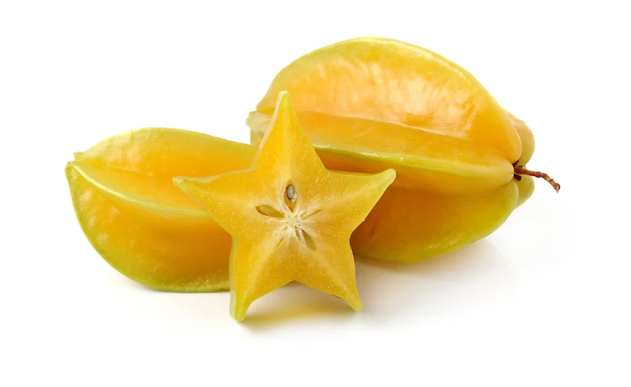

tentang buah Nanas!

Belimbing
Belimbing / Belimbing Manis adalah tumbuhan penghasil buah berbentuk khas yang berasal dari Indonesia, India, dan Sri Lanka. Saat ini, belimbing telah tersebar ke penjuru Asia Tenggara, Republik Dominika, Brasil, Peru, Ghana, Guyana, Tonga, dan Polinesia. Usaha penanaman secara komersial dilakukan di Amerika Serikat, yaitu di Florida Selatan dan Hawaii. Di Indonesia, buah ini menjadi ikon kota Depok, Jawa Barat, sejak tahun 2007.
juga digunakan banyak jenis makanan pesta.
- Menurunkan berat badan
- Mengendalikan kadar gula darah
- Memperkuat sistem imunitas
- Meredakan sakit maag
- Mengurangi risiko penyakit kardiovaskular.
daftar harga
| jenis Belimbing | Harga | |
|---|---|---|
| per kilo | per biji | |
| Belimbing Demak | 80.000 | 8.000 |
| Belimbing Sembiring | 45.000 | 9.000 |
| Belimbing Bangkok | 56.000 | 8.000 |
| Belimbing Wulan | 100.000 | 10.000 |